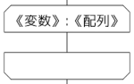

PyPENの文法
値
数は整数と実数が区別される。小数部分を含まない数は整数とする。例：3.0は実数
文字列は""または''または「」で囲む（""中の"は\"，''中の'は\'と表記する）。
真偽値はTrueとFalseのどちらかである。
[1,2,3]のようなリストも使える。
{"x":3, "y":4}のような辞書も使える。
値渡し・参照渡し
PyPENでは整数・実数・文字列・真偽値は値渡しであるが，リスト・辞書は参照の値渡しである。 つまり，リストや辞書を引数に渡すときは，そのリストや辞書の中身が変わることがある。 リストや辞書を値渡ししたいときには，copy関数を使う。
a = [1,2,3]
b = a # aとbは同じリストを参照している
c = copy(a) # cはaのコピー
a[0] = 10 # aは[10,2,3]， bは[10,2,3]， cは[1,2,3]
b[1] = 20 # aは[10,20,3]，bは[10,20,3]，cは[1,2,3]
c[2] = 30 # aは[10,20,3]，bは[10,20,3]，cは[1,2,30]
変数
変数を宣言することはできない。値を代入した時点で変数は生成される。 また，変数は型を持たない。
変数名の後に番号や文字列をいれた[ ]をつけてリストや辞書を使うことができる。 二次元以上のリストの要素はa[1,2]またはa[1][2]などのように使う。
計算
計算の演算子
+,-,*,/,//,%,**が使える。*は掛け算，/と//は割り算，%は割り算の余り（整数どうしに限る）を表す。 ただし/の割り算は余りを出さない割り算（結果は実数）で，//の割り算は商の整数部分（結果は整数）を表す。 また，**はべき乗を表す。
ビット演算は&,|,^,~,<<,>>が使える。
「《整数》個の《値》」でリストをつくることもできる。
例：a=10個の0
条件式
2つの値を==,≠,!=,>,<,≧,>=,≦,<=で比べることができる。 !=は≠，>=は≧，<=は≦とそれぞれ同じである。 条件式を"and"，"or"でつないだり，"not"を前置することで否定することができる。 "not"，"and"，"or"の順に優先的に結合され，同じものどうしは左から順に評価される。 3つ以上の値を比べる場合は，たとえばa<b<cをa<b and b<cのように評価する。
リストの中にある値が含まれるかどうかを"《リスト》の中に《値》"で調べることができる。
真偽値以外が条件として使われる場合，次の場合を除いてTrueとみなされる。
- 整数または実数が0の場合
- 文字列が空，または'0'の連続，'false'，'偽'の場合（大文字小文字は問わない）
- リストが空の場合
- 辞書が空の場合
文字列結合
"と"で文字列を結合することができる。数値は文字列に変換してから結合される。 例："こん"と"にちは"→"こんにちは"。1と2→"12"
組み込み関数
次のような関数を使うことができる。文字列の位置や番号は0から始まる。なお，関数と手続きの区別はなくなったので，今後はすべて関数として説明する。
| 関数 | 意味 | 使用例 |
|---|---|---|
| abs(《値》) | 絶対値 | abs(-3)→3 |
| random() | 実数の乱数 | random()→0以上1未満の乱数（実数） |
| random(《整数》) | 整数の乱数 | random(5)→0以上5以下の乱数（整数） |
| ceil(《実数》) | 小数部分切り上げ | ceil(3.14)→4 |
| floor(《実数》) | 小数部分切り捨て | floor(3.14)→3 |
| round(《実数》) | 小数部分四捨五入 | round(3.14)→3 |
| sin(《実数》) | 三角関数のサイン（単位はラジアン） | sin(0)→0 |
| cos(《実数》) | 三角関数のコサイン（単位はラジアン） | cos(0)→1 |
| tan(《実数》) | 三角関数のタンジェント（単位はラジアン） | tan(0)→0 |
| asin(《実数》) | 逆三角関数のアークサイン（単位はラジアン） | asin(1)→1.5707963267948966 |
| acos(《実数》) | 逆三角関数のアークコサイン（単位はラジアン） | acos(0)→1.5707963267948966 |
| atan(《実数》) | 逆三角関数のアークタンジェント（単位はラジアン） | atan(1)→0.7853981633974483 |
| atan2(《実数》,《実数》) | 逆三角関数のアークタンジェント（単位はラジアン） | atan(1,0)→1.5707963267948966 |
| sqrt(《実数》) | ルート | sqrt(2)→1.414… |
| log(《実数》) | 自然対数 | log(10)→2.302… |
| exp(《実数》) | 指数関数（底は自然対数の底） | exp(1)→2.718… |
| pow(《実数》,《実数》) | 累乗 | pow(2,3)→8 |
| length(《文字列》) | 文字列の長さ（文字数） | length("こんにちは")→5 |
| length(《リスト》) | リストの長さ | length([1,2,3,4,5])→5 |
| append(《文字列》,《文字列》) | 文字列結合 | append("Wa","PEN")→"WaPEN" |
| substring(《文字列》,《開始位置》) | 部分文字列（最後まで） | substring("こんにちは",2)→"にちは" |
| substring(《文字列》,《開始位置》,《長さ》) | 部分文字列（長さ指定） | substring("こんにちは",2,1)→"に" |
| split(《文字列》) | 文字列分割 | split("abcd")→["a","b,"c","d"]（リスト） |
| split(《文字列》,《区切文字列》) | 文字列分割 | split("a:b:c:d",":")→["a","b,"c","d"]（リスト） |
| extract(《文字列》,《区切文字列》,《番号》) | 文字列分割（番号指定） | extract("a:b:c:d",":",2)→"c" |
| insert(《文字列》,《位置》,《文字列》) | 文字列挿入 | insert("こんは",2,"にち")→"こんにちは" |
| replace(《文字列》,《位置》,《長さ》,《文字列》) | 文字列置換 | replace("こんにちは",2,2,"ばん")→"こんばんは" |
| 整数(《値》) | 整数への変換 | 整数(3.5)→3，整数("3.14")→3 |
| 実数(《値》) | 実数への変換 | 実数(3)→3.0，実数("3.14")→3.14 |
| 文字列(《値》) | 文字列への変換 | 文字列(3.5)→"3.5"，文字列(1=1)→"true" |
| 真偽(《値》) | 真偽への変換 | 真偽(0)→false，整数(1)→true |
| pop(《リスト》) | リストの末尾を取り出して削除 | a=[1,2,3]でpop(a)→3（aは[1,2]になる） |
| shift(《リスト》) | リストの先頭を取り出して削除 | a=[1,2,3]でshift(a)→1（aは[2,3]になる） |
| push(《リスト》,《値》) | リストの末尾に値を追加 | a=[1,2,3]でpush(a,4)→aは[1,2,3,4]になる |
| unshift(《リスト》,《値》) | リストの先頭に値を追加 | a=[1,2,3]でunshift(a,4)→aは[4,1,2,3]になる |
| typeof(《値》) | 値の型（整数，実数，文字列，真偽，リスト，辞書） | typeof(3)→"整数" |
| typeis(《値》,《型名》) | 値がこの型かどうか | typeis(3,"実数")→False |
| range(《値》) | Pythonのrangeで生成される値のリスト。range(start, stop, step)にも対応 | range(3)→[0,1,2] |
| match(《正規表現》,《文字列》) | マッチしたらマッチ部分とカッコで一致した部分のリストを返す。マッチしなければ空リスト。 | b = match("(.*is)\sis a (.*)\.","This is a pen.")→["This is a pen.","This is","pen"] |
| 関数 | 意味 | 使用例 |
|---|---|---|
| max(《複数の値》) | 最大値 | max(1,5,3)→5 max([1,5,3])→5（他の関数も同様） |
| min(《複数の値》) | 最小値 | min(1,5,3)→1 |
| median(《複数の値》) | 中央値 | median(1,5,3)→3 |
| sum(《複数の値》) | 総和 | sum(1,5,3)→9 |
| prod(《複数の値》) | 総積 | prod(1,5,3)→15 |
| sumprod(《複数の値》,《複数の値》) | 積の和 | sumprod([1,2,3],[4,5,6])→32 |
| factorial(《非負整数》) | 階乗 | factorial(5)→120 |
| comb(《非負整数》,《非負整数》) | 組み合わせ | comb(6, 2)→15 |
| perm(《非負整数》,《非負整数》) | 順列 | perm(6, 2)→30 |
| mean(《複数の値》) | 平均値 | mean(1,5,3)→3.0 |
| average(《複数の値》) | 平均値 | average(1,5,3)→3.0 |
| pvariance(《複数の値》) | 分散（nでわる） | pvariance(1,3,5)→2.666… |
| variance(《複数の値》) | 分散（n-1でわる） | variance(1,3,5)→4.0 |
| pstdev(《複数の値》) | 標準偏差（nでわる） | pstdev(1,3,5)→1.632… |
| etdev(《複数の値》) | 標準偏差（n-1でわる） | stdev(1,3,5)→2.0 |
| pcovariance(《複数の値》,《複数の値》) | 共分散（nでわる） | p([1,2,3],[4,5,6])→0.666… |
| covariance(《複数の値》,《複数の値》) | 共分散（n-1でわる） | p([1,2,3],[4,5,6])→1.0 |
| linear_regression(《複数の値》,《複数の値》) | 回帰直線の傾きと切片のリスト | linear_regression([1,2,3],[3,4,6])→[1.5, 1.333…] |
| dnorm(《実数値》) | 標準正規分布の確率密度関数の値 | dnorm(0)→0.399 |
| pnorm(《実数値》) | 標準正規分布の累積分布関数の値 | pnorm(1.96)→0.975 |
| qnorm(《実数値》) | pnormの逆関数 | qnorm(0.975)→1.96 |
| correl(《複数の値》,《複数の値》) | 相関係数 | p([1,2,3],[4,5,6])→1.0 |
| sorted(《リスト》) | ソートしたリストを返す（元のリストはそのまま） | sorted([3,1,2])→[1,2,3] |
| shuffled(《リスト》) | シャッフルしたリストを返す（元のリストはそのまま） | shuffled([3,1,2])→[2,3,1]など |
| reversed(《リスト》) | 逆順のリストを返す（元のリストはそのまま） | reversed([3,1,2])→[2,1,3] |
| next_permutation(《リスト》) | 辞書順で次の順番の順列（元のリストはそのまま。終了時は空リスト） | next_permutation([1,2,3])→[1,3,2] |
| ord(《文字》) | 文字に対応する文字コード | ord('情')→24773 |
| chr(《整数》) | 文字コードに対応する文字 | chr(24773)→'情' |
| gcd(《非負整数》,《非負整数》) | 最大公約数 | gcd(32, 48)→16 |
| lcm(《非負整数》,《非負整数》) | 最小公倍数 | lcm(32, 48)→96 |
| all(《リスト》) | 複数のAND | all(True, True, False)→False |
| any(《リスト》) | 複数のOR | any(True, True, False)→True |
| swap(《変数》,《変数》) | 値を入れ替える | a = 3, b =4のときswap(a, b)→a=4, b = 3 |
| sort(《リスト》) | ソートする | a =[3,1,2]でsort(a)→aは[1,2,3]になる |
| shuffle(《リスト》) | シャッフルする | a = [3,1,2]でshuffle(a)→aは[2,3,1]など |
| reverse(《リスト》) | 逆順にする | a=[3,1,2]でreverse(a)→aは[2,1,3]になる |
代入
《変数》=《値》

"《リスト変数》に《値》を追加する"，"《リスト変数》に《リスト値》を連結する"という構文も用意されている。
a=[0,1,2,3,4,5]
aに6を追加する
aに[7,8]を連結する
+=や&=のような複合代入演算子も使える。
入力
《変数》に整数を入力する

"整数"の部分は"実数""文字列""真偽"にすることもできる。
出力
表示する(《値》)
《値》を表示する

改行無しで表示する(《値》)
《値》を改行無しで表示する

《値》にリストを指定すると，リストの全要素が表示される。値をコンマ区切りで複数指定すると，それらが空白区切りで表示される。
分岐（選択）
もし《条件》ならば：
《命令》
もし《条件》ならば：
《命令》
そうでなければ：
《命令》
「そうでなくもし」を使うこともできるが，これを使うとフローチャートの表示は行わない。
もし《条件》ならば：
《命令》
そうでなくもし《条件》ならば：
《命令》
そうでなければ：
《命令》

ループ
〜の間
《条件》の間：
《命令》

増やしながら・減らしながら
《変数》を《値》から《値》まで《値》ずつ増やしながら：
《命令》

《変数》を《値》から《値》まで《値》ずつ減らしながら：
《命令》

リストの要素を取り出しながら
《リスト》の要素《変数》について繰り返す：
《命令》

"繰り返しを抜ける"命令で繰り返しから抜けることができる。
ファイル操作
| 関数・命令 | 意味 |
|---|---|
| openr(《ファイル名》) | ファイルを読込用にオープンする。戻り値はファイル番号 |
| openw(《ファイル名》) | ファイルを書込用にオープンする。戻り値はファイル番号 |
| opena(《ファイル名》) | ファイルを追記用にオープンする。戻り値はファイル番号 |
| getline(《ファイル番号》) | ファイルから1行読み込む。戻り値は文字列（改行含む） |
| getchar(《ファイル番号》) | ファイルから1文字読み込む。戻り値は文字列 |
| putline(《ファイル番号》,《文字列》) | ファイルに文字列と改行を書き込む |
| putstr(《ファイル番号》,《文字列》) | ファイルに文字列を書き込む |
| close(《ファイル番号》) | ファイルをクローズする |
書込・追記用ファイルはクローズしないと保存しないことに注意。
グラフィック関係などの命令
| 命令 | 英語表記 | 補足 |
|---|---|---|
| 描画領域開く(《幅》,《高さ》) | gOpenWindow | 1つしか開けない |
| 描画領域閉じる() | gCloseWindow | |
| 描画領域全消去() | gClearWindow | |
| 線色設定(《赤》,《緑》,《青》) | gSetLineColor | 各色の数は0〜255 |
| 塗色設定(《赤》,《緑》,《青》) | gSetFillColor | |
| 文字色設定(《赤》,《緑》,《青》) | gSetTextColor | |
| 線太さ設定(《太さ》) | gSetLineWidth | |
| 文字サイズ設定(《サイズ》) | gSetTextSize | |
| 文字描画(《文字列》,《x》,《y》) | gDrawText | (x,y)は文字列の左下の座標 |
| 点描画(《x》,《y》) | gDrawPoint | |
| 線描画(《x1》,《y1》,《x2》,《y2》) | gDrawLine | |
| 矩形描画(《x》,《y》,《幅》,《高さ》) | gDrawBox | (x,y)は矩形の左上の座標 |
| 矩形塗描画(《x》,《y》,《幅》,《高さ》) | gFillBox | |
| 円描画(《x》,《y》,《半径》) | gDrawCircle | (x,y)は中心の座標 |
| 円塗描画(《x》,《y》,《半径》) | gFillCircle | |
| 楕円描画(《x》,《y》,《幅》,《高さ》) | gDrawOval | (x,y)は楕円に外接する長方形の左上の座標 |
| 楕円塗描画(《x》,《y》,《幅》,《高さ》) | gFillOval | |
| 弧描画(《x》,《y》,《幅》,《高さ》,《開始角》,《終了角》,《閉じ方》) | gDrawArc | (x,y)は楕円に外接する長方形の左上の座標 角度の単位は度 閉じ方は0:閉じない，1:弦，2:半径 |
| 弧塗描画(《x》,《y》,《幅》,《高さ》,《開始角》,《終了角》,《閉じ方》) | gFillArc | |
| 棒グラフ描画(《幅》,《高さ》,《値のリスト》) | gBarplot | 棒グラフ描画(100,100,[30,10,20])→ |
| 線グラフ描画(《幅》,《高さ》,《値のリスト》) | gLineplot | 線グラフ描画(100,100,[[30,10,20],[10,30,20]])→ |
| グラフ描画(《レイアウト情報》,《値のリスト》) | gDrawGraph | 使い方が難しいので別マニュアルで説明する |
| グラフ消去() | gClearGraph | gDrawGraphで表示したグラフを消去する |
| 変数を確認する | 全変数を表示する | |
| 何もしない | 何もしない |
棒グラフ描画，線グラフ描画の《値のリスト》は《値のリストのリスト》でも良い。
関数の定義
注意：関数を定義したプログラムについては，フローチャートの実装がまだできていない。 この状態で間違ってフローチャートを変更するとプログラムがごそっと消えてしまうので， 関数を定義するプログラムではフローチャートの表示をしないことをお勧めします。
関数 hoge(x)：
…
《値》を返す
以前は値を返すか返さないかで関数・手続きと分けていたが，関数に一本化した。引数を取らない場合であってもカッコが必要（定義するときも呼び出すときも）。「関数を抜ける」で関数の途中から抜けることもできる。
Python風のインデントが合ってないとエラーになります。インデントする前の行末は"："が必要です。